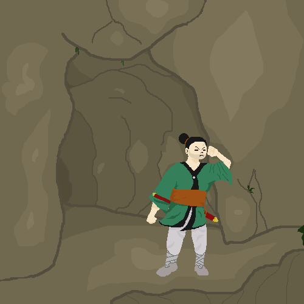

Satsuma

Esse jogo foi desenvolvido para o TCC
História do jogo
O jogo se trata da famosa guerra de Satsuma, ou no caso, "O Ultimo Samurai".
O jogo conta a historia de um personagem ficticio chamado Yūkan (Corajoso) um homem que tem seu cotidiano bagunçado pelo avanço da sociedade e o abandono de certos costumes.
- Felipe Barros
- Giordano Bruno
- Lucas Freitas
- William Fabiano